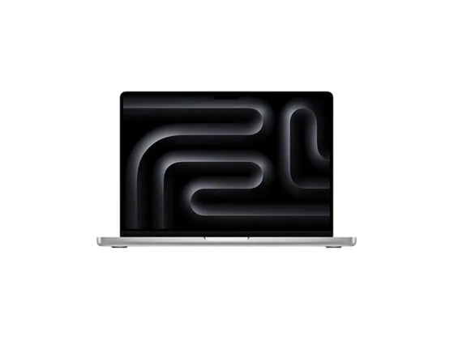
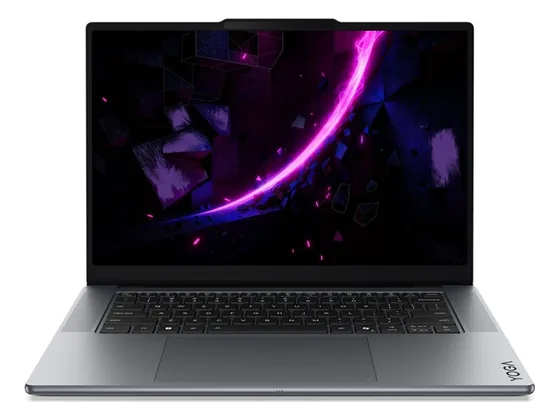
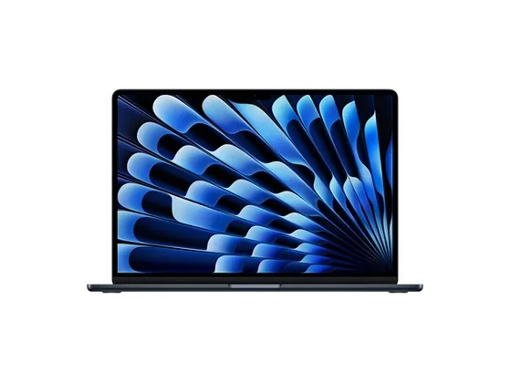
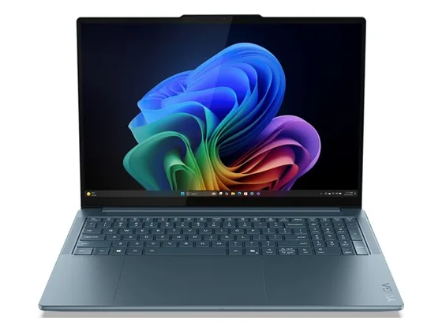

Apple MacBook Pro 14" M5 : avis, tests et prix
Le verdict en une phrase. Écran mini-LED parfaitement calibré, puce M5 polyvalente et connectique complète : la presse lui donne les meilleures notes de la catégorie.
Notre choix dans le top 10 PC portables création.

Pour qui ?
Vous retouchez des photos ou montez des vidéos et voulez un écran calibré dès la sortie de la boîte, avec toute la connectique.
Vous voulez pouvoir faire évoluer la mémoire ou le stockage après l'achat.
Le consensus de la presse
Sur 7 notes, 7 atteignent ou dépassent 8/10. La plus haute : 10,0/10 (Absolute Geeks) ; la plus basse : 8,0/10 (Tom's Hardware). Dernier test relevé : mai 2026.
Où l'acheter
La configuration peut différer d'un marchand à l'autre : vérifiez la fiche avant d'acheter. Liens d'affiliation : ils n'influencent ni les notes ni le classement.
Tous les tests recensés
Chaque ligne renvoie vers le test d'origine. Les notes sont converties sur 10 ; « test » signale un article sans note chiffrée. Notre méthode.
- Absolute Geeks10,0
- Frandroid10,0
- T310,0
- Notebookcheck9,1
- Numerama9,0
- The Verge9,0
- Tom's Hardware8,0
- ComputerBasetest
- Future Zonetest
- HardwareZonetest
- Labo Fnactest
- Les Numériquestest
- Notebookchecktest
- PCtipptest
- Tweakerstest
- Tweakerstest
- Wiredtest
Source du relevé : Synthèse CommentChoisir.
Les alternatives pour le même usage
Tout le top 10 →
Lenovo Yoga Pro 7 15Un 15 pouces multimédia très bien noté pour son écran et son équilibre général, plus raisonnable que le Yoga Pro 9i. N° 3 · Le Mac grand écran
Apple MacBook Air 15" M5Grand écran, silence total et puce M5 : parfait pour la photo et le montage léger, sans ventilateur ni encombrement. N° 4 · L'écran le plus abouti
Lenovo Yoga Pro 9i 16Un écran OLED tandem exceptionnel (jusqu'à 1 600 nits), de la puissance et une finition premium : le rival direct du MacBook Pro sous Windows.Questions fréquentes
Que pense la presse de l'ordinateur Apple MacBook Pro 14" M5 ?
La note presse moyenne est de 9,3/10, calculée sur 7 notes (de 8,0 à 10,0/10). Écran mini-LED parfaitement calibré, puce M5 polyvalente et connectique complète : la presse lui donne les meilleures notes de la catégorie.
Quels sont les points faibles relevés par les tests ?
RAM et SSD non évolutifs ; Ventilation audible en charge soutenue ; Encoche toujours présente.
À qui s'adresse le modèle Apple MacBook Pro 14" M5 ?
Vous retouchez des photos ou montez des vidéos et voulez un écran calibré dès la sortie de la boîte, avec toute la connectique. À éviter si : vous voulez pouvoir faire évoluer la mémoire ou le stockage après l'achat.
Où l'acheter, et à quel prix ?
Prix relevés le 02/10/2026 : 2 199 € chez Darty. Les prix changent vite et la configuration peut différer d'un marchand à l'autre : seul le prix affiché par le marchand fait foi.